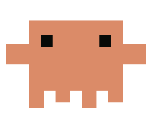

Claude activation
Lauren Hodge

(1) Small bet · 1–2 days
Reactivate
Give dormant users a reason to return with an email that shows something unexpected Claude can create. Pair a working interactive example with a suggested first edit, inviting users to make it their own.
Explore prototype → (2) Medium bet · ~2 weeksConnector Activation
Help new users discover connectors through a visible entry point, then suggest useful tasks immediately after connection, making the value clear and reducing the burden of inventing a task.
Explore prototype → (3) Big bet · 1–2 monthsDiscover
A browsable discovery destination alongside chat that brings Claude’s capabilities to life through guided examples and interactive demos. Users explore what’s possible, find something relevant, and move into a real conversation with one click.
Explore prototype →